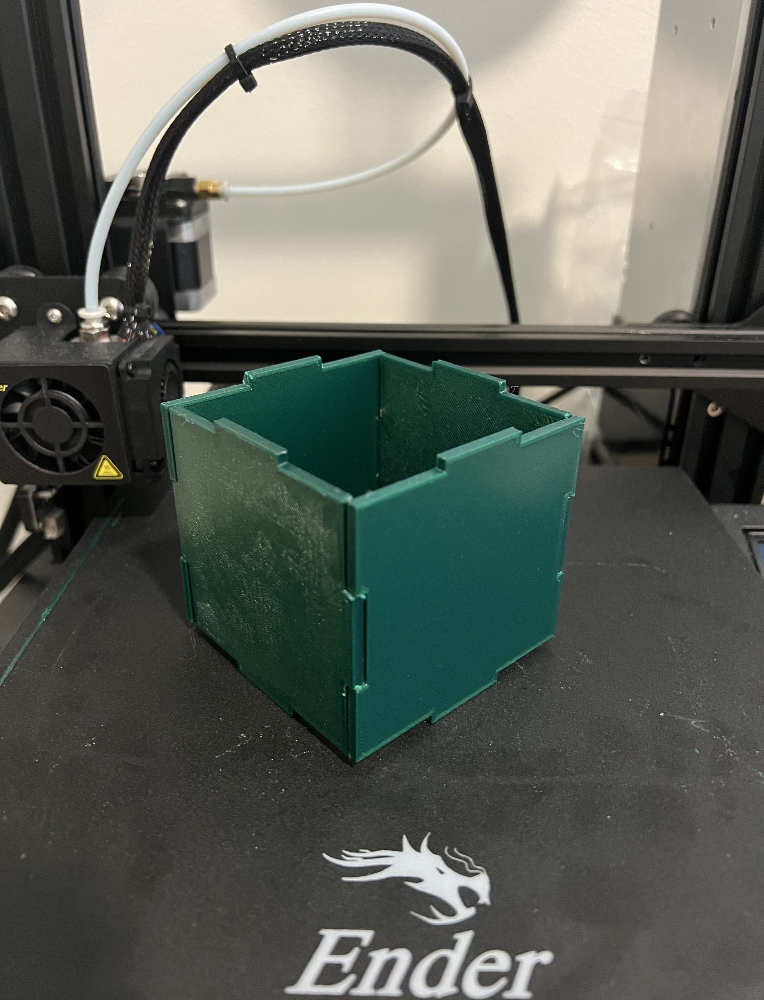
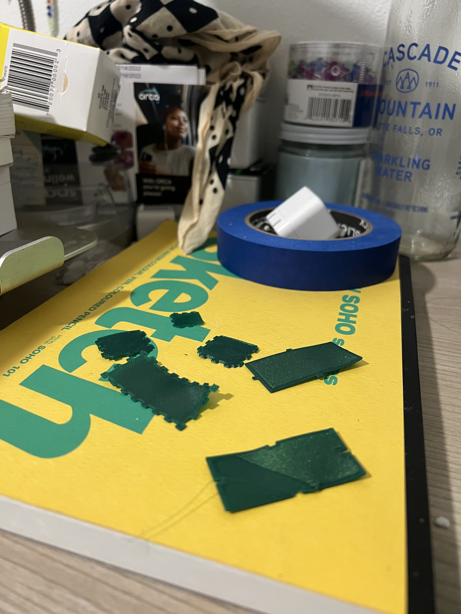
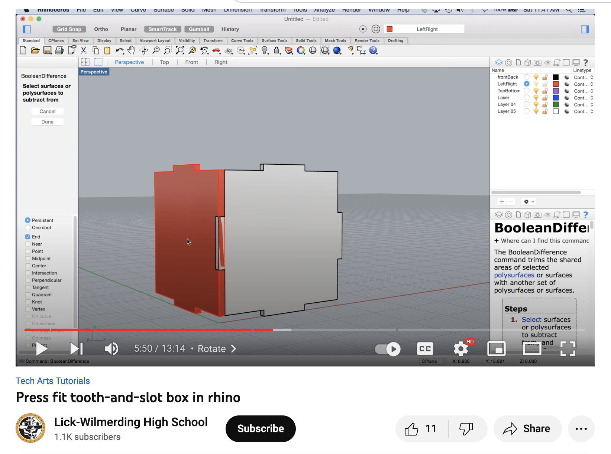
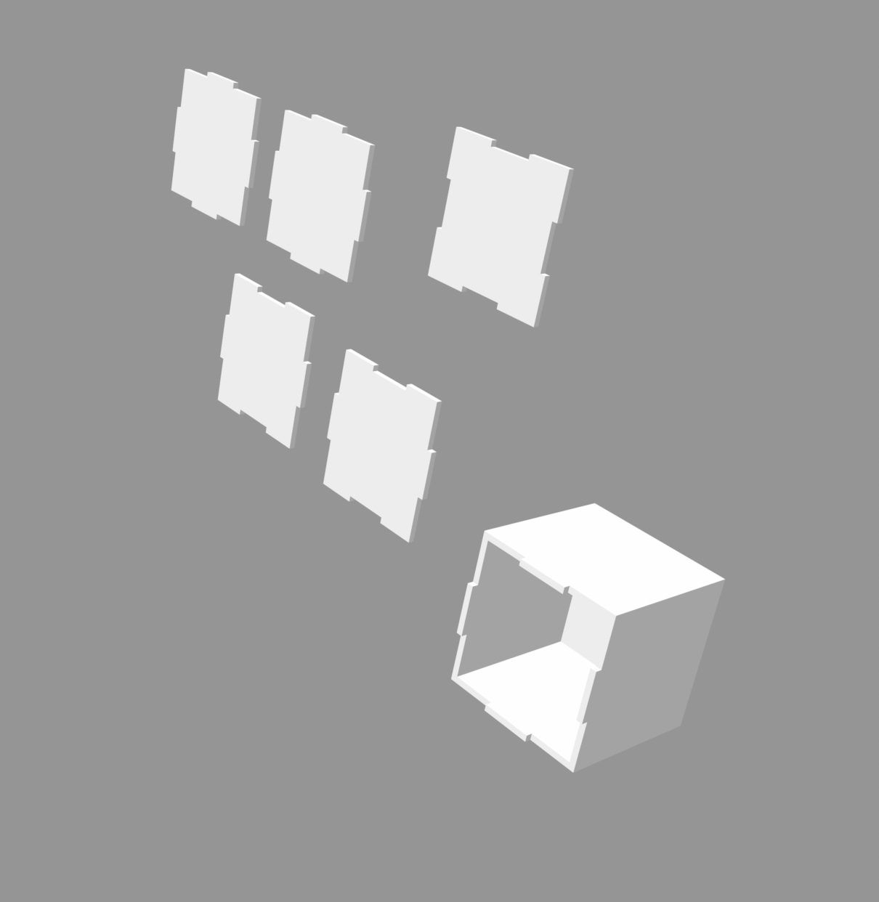
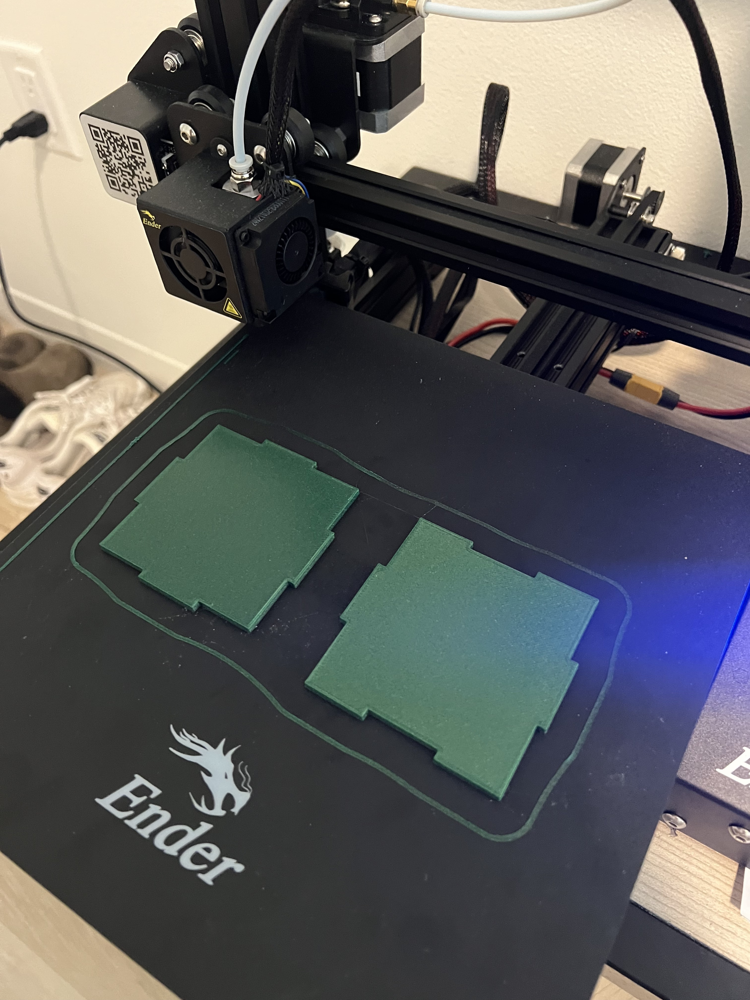
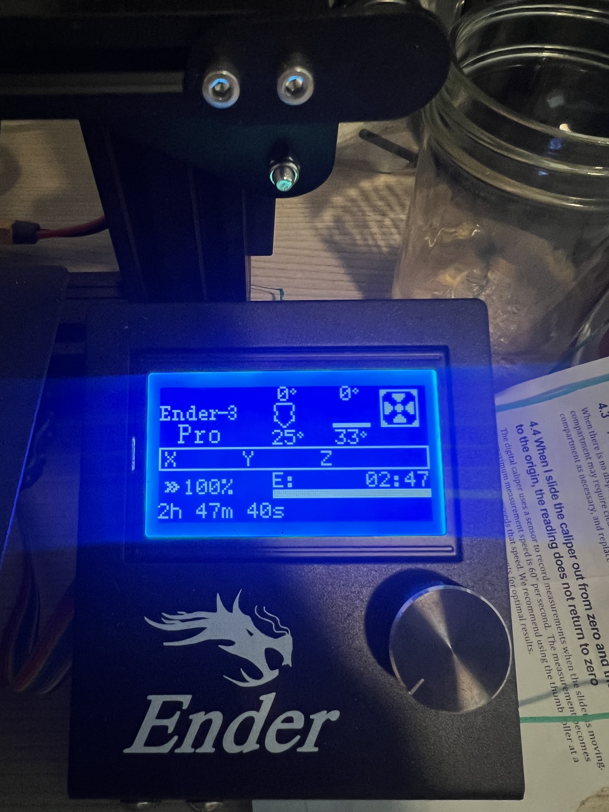
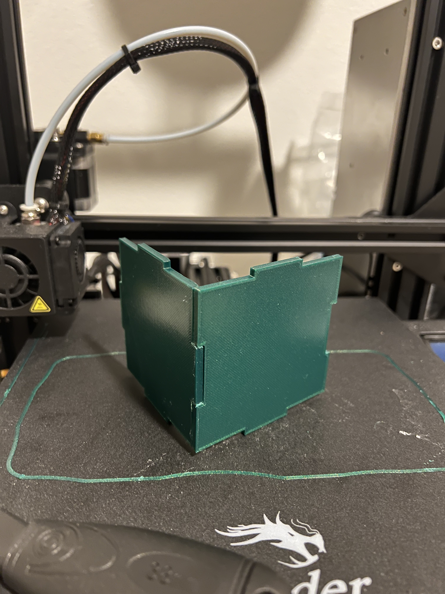

Design a box that is made up of flat panels with finger joints/box joints, tabs, or another joining method design for sheet material. Your panels and all tabs need to be 3d printed, but you cannot 3D print the box in one piece. Design for an interference fit, that is, when you press the panels together, they should join tightly and not need additional fasteners and screws. Furthermore, they should provide a close enough fit that your resulting box can hold something like sugar without leaking.
Due to time constraints, my work schedule, and the cost of the 3d printer… I decided to 3d print this box project.
First, I tried to freehand some designs on illustrator, import them into Rhino, and then into Cura… I quickly found out through test printing the designs that I was not being precise enough. I needed to find a way to compromise between time and precision (within reason).
To make amore precise design I retuned to a video that I found helpful when using the laser cutter. I used this laser-cut tutorial to build my Rhino file for the box print…
 The panels connected but did not have a totally perfect fit! I think sugar would possibly spill out of the box! I would have loved to get a closer fit, but due to time constraints, I had to embrace that this was my most precise print yet …
  Under ideal conditions, I would do the following to get a more precise build:
Make a fit key print earlier in the process to check what measurements I needed to use.
Add more tabs and make them smaller to get a tighter fit along each edge.
And/or make a parametric model with lots of finger joints to ensure a cleaner and tight fit. I watched some videos on how to do this, but the math required to build the box was going over my head, so this would be something that I needed more time to work on and learn about.
Learn more about dog bones and other CNC milling tips and tricks for future use.